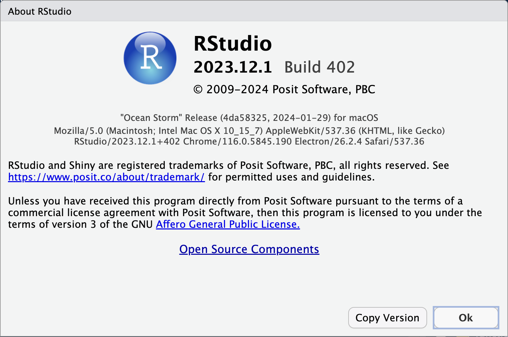

| Day 1: Tues. Oct. 8, 1-4pm | |
| (i) | Open Science Practices and reproducibility |
| (ii) | Data management: folder/file organisation, data handling |
| (iii) | Working with RProjects + project-relative filepaths with {here} |
| Day 2: Thurs. Oct. 17, 1-4pm | |
| (iv) | Modular analyses and literate programming with Quarto |
| (v) | Package management with {renv} |
| (vii) | Code review via online repositories |
Workshop overview
This website contains slides for a two-part workshop given given by Daniela Palleschi at the Leibniz-Zentrum Allgemeinesprachwissenschaft (ZAS) Berlin. The tools discussed are specific to the R enviornment, but the concepts are universal and programming language agnostic. The materials are re-structured from various other renditions of the workshop, all of which were based on a semester-length course on the same topic given at the Humboldt-Universität zu Berlin in the summer semester 2024. The materials for the semester-length course are more exhaustive, and can be viewed here.
Schedule
Table 1 shows the tentative plan for the workshop and may be adjusted based on the needs of the participants.
Preparation
It is assumed you have at least some basic familiarity with R and R Studio. Please at the very least make sure you have the required software before Day 1.
Software: R and RStudio
Please make sure you have recent versions of R and RStudio installed prior to the workshop. Below you will find information on how to check which version of R and RStudio you currently have, and how to install or update them as needed.
Check software versions
R
To check which version of R you currently have, run the command R.version$version.string in the Console (to print just the version name and release date), or R.version$nickname (to print the nickname).
In the Console: print R version and release date
R.version$version.string[1] "R version 4.4.1 (2024-06-14)"In the Console: print R version nickname
R.version$nickname[1] "Race for Your Life"R
To check which version of RStudio you currently have, run the command R.version$version.string in the Console (to print just the version name and release date), or R.version$nickname (to print the nickname). Be sure to include these only in the Console, as Rmarkdown/Quarto scripts will not be able to run these commands.
In the Console: print RStudio version number
RStudio.Version()$versionIn the Console: print RStudio version nickname
RStudio.Version()$release_nameAlternatively, you can go to Help > About RStudio in RStudio. You should see a pop-up like Figure 1.

Intall/update software
- Install or update R
- N.B., I am currently using version 4.4.1 (Race for Your Life, 2024-06-14)
- having an R version from 2022.07 or later should suffice
Disclaimer: Updating R
Beware that updating R can interfere with on-going R projects you are currently working on, most notably because you will need to re-install packages (and thus you may be installing more recent package versions which may break existing code). If you are currently in the middle of analysing some data, you may not want to update R right now. In this case, just make note of which version you’re currently running (e.g., by running R.version in the Console)
- Install or update RStudio
- I am currently using RStudio version 2023.12.1+402, as I encountered issues when updating to 2024.04.2+764 in April when it was released. As a rule of thumb, I update R and/or RStudio a few months after their initial release, and when I know I have time to fix any bugs that might pop up (i.e., I don’t have a looming deadline)
Suggested readings (before, during, or after the workshop)
There is currently a wealth of literature on the topic of reproducibility, both in terms of meta-science reviews of rates of reproducibility and in terms of best-practice advice. Some reading I would suggest for a soft introduction into the latter would be:
- Nagler, J. (1995). Coding Style and Good Computing Practices. PS: Political Science & Politics, 28(3), 488–492. https://doi.org/10.2307/420315
- Bowers, J., & Voors, M. (2016). How to improve your relationship with your future self. Revista de Ciencia Política (Santiago), 36(3), 829–848. https://doi.org/10.4067/S0718-090X2016000300011
- Wilson, G., Bryan, J., Cranston, K., Kitzes, J., Nederbragt, L., & Teal, T. K. (2017). Good enough practices in scientific computing. PLOS Computational Biology, 13(6), e1005510. https://doi.org/10.1371/journal.pcbi.1005510
- Seibold, H. (2024). 6 Steps Towards Reproducible Research (v1 ed.). Zenodo. https://doi.org/10.5281/zenodo.12744715
For a book-length treatment of R-specific reproducible workflows:
- Rodrigues, B. (2023). Building reproducible analytical pipelines with R. https://raps-with-r.dev/
And for an overview of R-specific data analysis suggestions, I recommend the following on-line resources:
- Bryan, J., Hester, J., Pileggi, S., & Aja, D. E. (n.d.). What They Forgot to Teach You About R. Retrieved May 6, 2024, from https://rstats.wtf/
- Bryan, J., & TAs, T. S. 545. (n.d.). R Basics and workflows. In STAT 545 Course materials. Retrieved May 6, 2024, from https://stat545.com/
For more general discussions on Open Science Practices:
- Kathawalla, U.-K., Silverstein, P., & Syed, M. (2021). Easing Into Open Science: A Guide for Graduate Students and Their Advisors. Collabra: Psychology, 7(1), 18684. https://doi.org/10.1525/collabra.18684
- Crüwell, S., Van Doorn, J., Etz, A., Makel, M. C., Moshontz, H., Niebaum, J. C., Orben, A., Parsons, S., & Schulte-Mecklenbeck, M. (2019). Seven Easy Steps to Open Science: An Annotated Reading List. Zeitschrift Für Psychologie, 227(4), 237–248. https://doi.org/10.1027/2151-2604/a000387